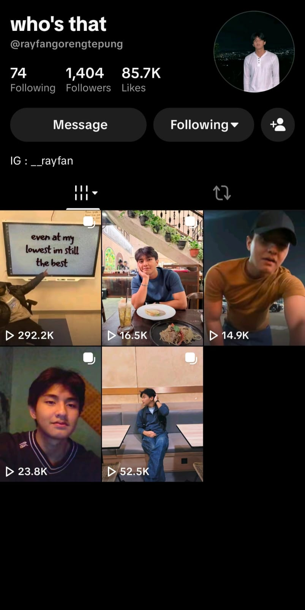
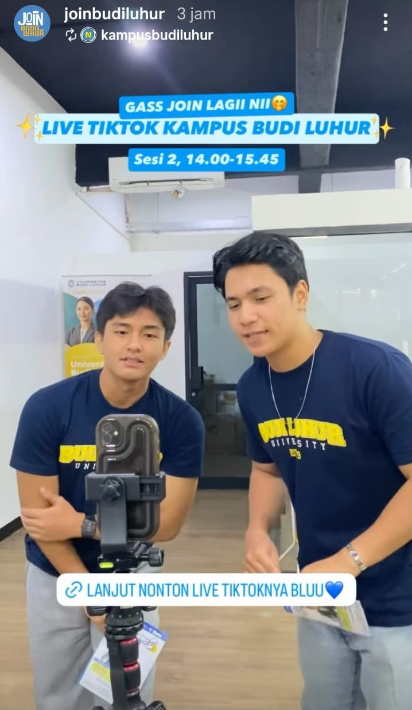
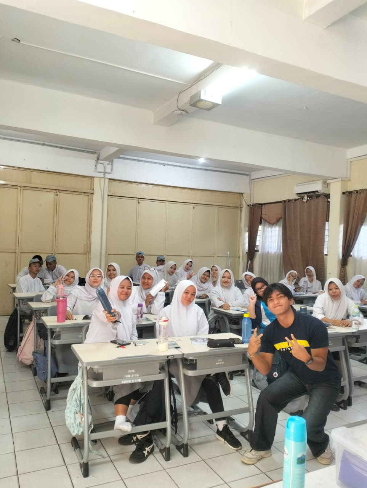
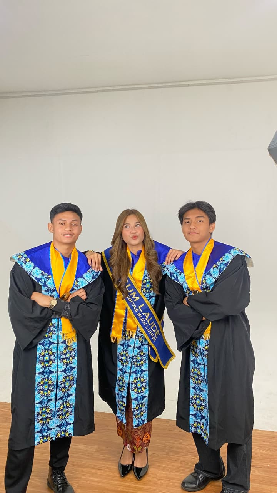
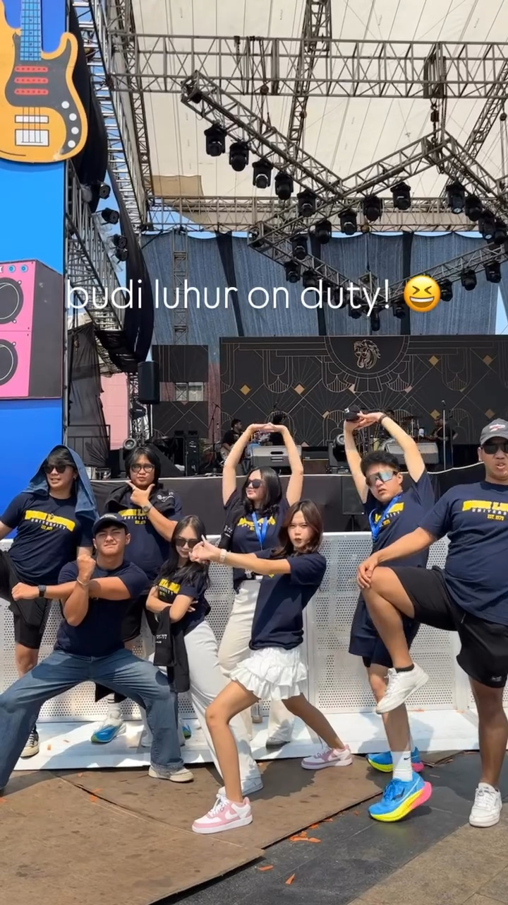

X (Twitter) Data Crawling & Sentiment Analysis
Sistem otomatis untuk mengekstrak data dari platform X (Twitter), membersihkan teks, mengklasifikasikan sentimen opini publik, dan menampilkan hasil melalui web berbasis Flask.
Lihat RepositoryMahasiswa Teknik Informatika dengan spesialisasi pada ekstraksi data, analisis sentimen, dan pengembangan web berbasis Python dan Flask, dipadukan dengan kemampuan public speaking dan live media hosting untuk menyampaikan solusi teknis secara efektif
Sistem otomatis untuk mengekstrak data dari platform X (Twitter), membersihkan teks, mengklasifikasikan sentimen opini publik, dan menampilkan hasil melalui web berbasis Flask.
Lihat RepositoryJenis: Sistem Akademik.
Fitur utama mencakup pengelolaan data akademik dan penerapan Fuzzy Logic Sugeno.
Pembuatan website profil, sistem informasi, dashboard, dan aplikasi web untuk UMKM serta sekolah.
Strategi pembuatan video User Generated Content (UGC) vertikal dengan rekam jejak organik menembus >290K tayangan.


Aktif mempromosikan Budi Luhur University ke berbagai sekolah. Berkomunikasi dengan siswa, guru, dan calon mahasiswa untuk memperkenalkan program serta lingkungan kampus.

Berpengalaman menjadi host live dan aktif membuat konten di TikTok. Terbiasa tampil di depan kamera, membangun interaksi, serta menyampaikan informasi secara menarik.

Terlibat sebagai EO dalam acara Semesta Berpesta BTV, acara BTV yang bekerja sama dengan Budi Luhur University.
